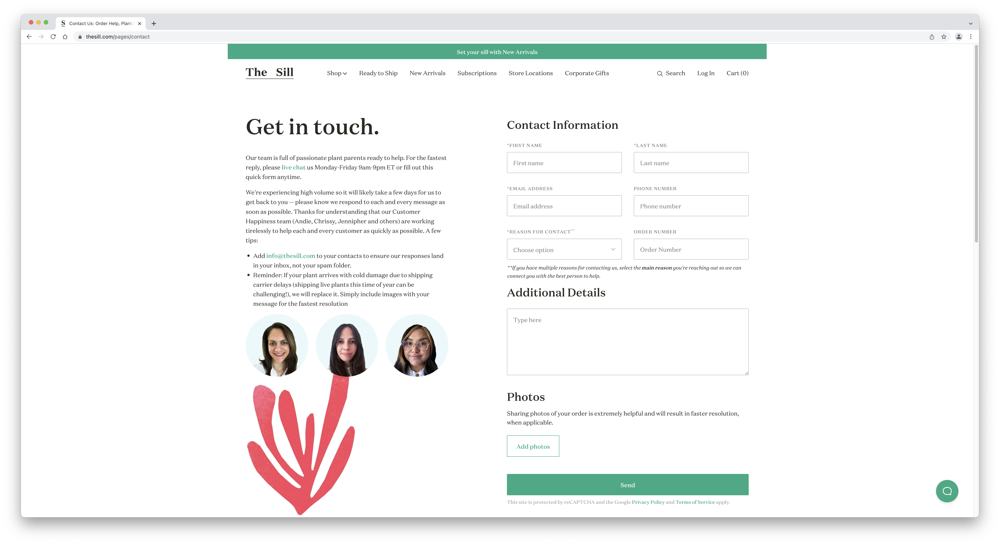
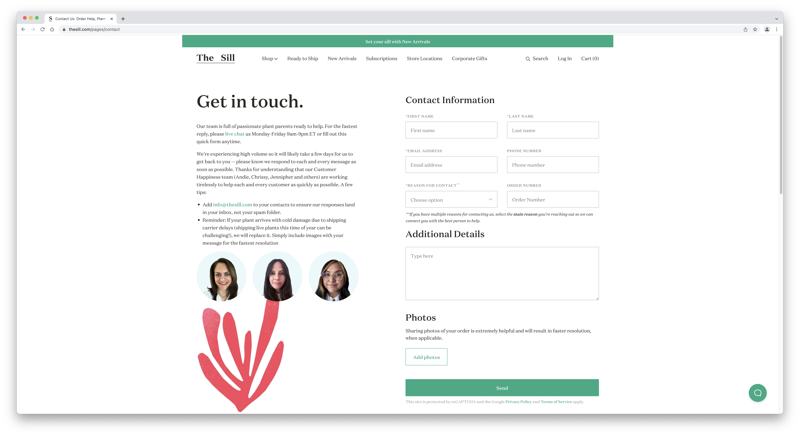

Final project proposal
Introduction
Leaf Love Plant Shop
Leaf Love Plant Shop is a small business that sells various houseplants, planters, and plant care tools.
Target audience
The primary audience for Leaf Love Plant Shop is people looking to beautify their spaces with greenery. Their goal is to purchase beautiful plants that wll liven up a room, and to keep their plants healthy over time. They do not want a plant that looks beautiful at first and then immediately dies, so this audience will also need proper tools and guidance on how to take care of plants.
Comparative analysis
Bloomscape


Sprout Home


The Sill
 

Website Content
Home
Welcome to Leaf Love, your mom and pop plant shop. Come visit us for all your botanical needs!
[Image of plant shop interior.]
About
Here at Leaf Love, we consider plants to be part of the family. We make sure that you are 100% satisfied with your plant purchase, and that your new plant continues to thrive at home. We are here to answer care questions, or give advice for troubleshooting any plant problems you may run into. We want to make life easier for plant owners!
[Close-up image of a house plant.]
Find Us
450 Higuera StreetSan Luis Obispo, CA 93405
Have a question?
Call us at 805-555-8374, or shoot us an email at leaflove@gmail.com
[Close-up image of a house plant.]
Plant Care
Which plant is right for you? Continue down this guide to find out, based on your living space.
Light
When you first take home a plant, it is absolutely normal for the plant to lose a few leaves as it is gettin used to its new space. It will soon adjust, if the lighting is right. Remember that plants become acclimated to light levels, so it is best to make the change gradually when moving your plant from a dark spot to a sunny area.
Bright Light
These plants thrive in full sun exposure, and are best for rooms with south-facing windows.
[Side-by-side images: aloe vera, cactus, ponytail palm.]
Moderate Light
These plants love a good partial shade, and do best in east- and west-facing windows.
[Side-by-side images: ficus, monstera, phildendron.]
Low Light
Plants that do well in low light will thrive by a north-facing window.
[Side-by-side images: snake plant, pothos, cast-iron plant.]
Water
When you first take home a plant, it is absolutely normal for the plant to lose a few leaves as it is gettin used to its new space. It will soon adjust, if the lighting is right. Remember that plants become acclimated to light levels, so it is best to make the change gradually when moving your plant from a dark spot to a sunny area.
- Don-t overwater. Only water your plant when the soil feels dry.
- Water slowly, so your plant's roots have time to absprb.
- Most plants thrive when watered about once or twice per week.